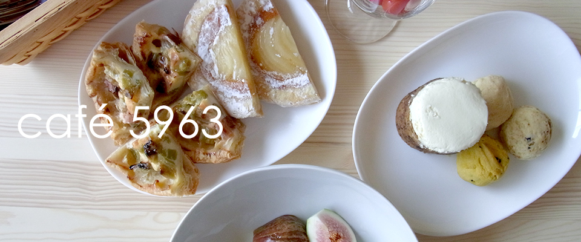

café5963 ブランジェリー・カフェ
café5963

café5963は恵比寿ガーデンプレイス内にあるカフェです。
2003年パリに開店した同名のカジュアルフレンチレストランの日本第1号店です。
café5963のコーヒー

コーヒー豆のおいしさはもちろん、栽培方法から出荷までのプロセスを確認し、高い品質基準に達した安心で安全な豆だけを輸入しています。
café5963のパン

独自に契約栽培したフランス産小麦を使用した、かめばかむほど味わいの深い5963のパン。バゲットやカンパーニュ、セイグル、フルート・アンシェンヌ、カンパーニュ・オ・フィグ・ノアなど。
お知らせ
07/20 フレンチトースト夏バージョンはじめました。
07/18 ティラミスとミルクとトマトのジェラートはじめました。
07/16 土日限定、夏メニューのブランチはじめました！
07/14 ランチメニューが新しくなりました。
07/12 ベルギー産ムール貝入荷！ムール貝祭開催！